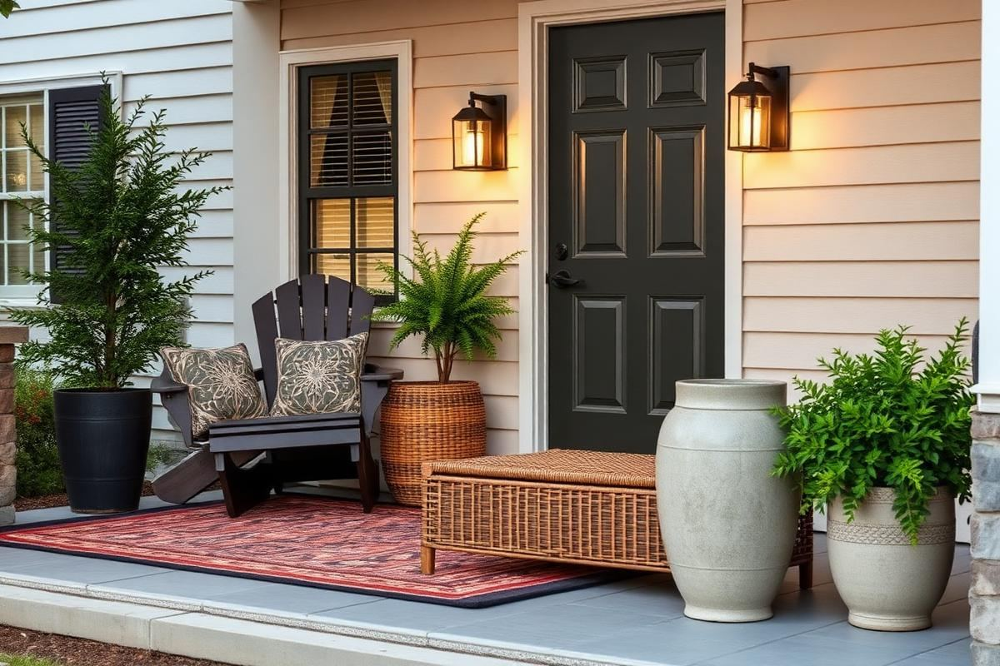

Front Porch Decorating Ideas for Every Season

Front Porch Decorating Ideas for Every Season is one of those topics where a little planning goes a long way. In this guide I walk through the process we use in real homes — not just what looks good in a photo, but what actually holds up over time.
Start here
Before you buy or move anything, measure the space and note how you actually use it. The best-looking room is one that matches how you live, so start with the routines: where you sit, where you drop keys, where the light falls in the afternoon.
The essentials
Focus on the pieces that do the most work. Get those right and the rest of the room comes together with much less effort. Aim for materials that patina rather than degrade, and colors you will still like in five years.
- Choose one clear focal point per room.
- Pick materials that improve with age.
- Layer textures instead of adding more colors.
- Leave visual breathing room — negative space is a design element.
Common mistakes
The mistakes we see most often are matching everything too tightly, over-scaling accessories, and skipping proper lighting. Fix those three and most rooms improve overnight.

Maximizing a Petite Front Porch
Even the most compact front porches can make a grand statement with thoughtful planning. The key is verticality and multi-functional pieces. Instead of a sprawling bistro set, consider a narrow console table, perhaps 30 inches wide and 12 inches deep, tucked against the wall. This provides a surface for seasonal decor without overwhelming the space. For seating, choose a single, comfortable Adirondack chair or a slender bench, no wider than 48 inches, that can double as a plant stand or temporary package drop-off. Wall-mounted planters are a lifesaver, liberating floor space while adding greenery. Look for tiered options, typically 18-24 inches tall, which hold multiple small plants. Another trick is to utilize the ceiling; hanging baskets, especially those with trailing plants, draw the eye upwards and add lushness without impediment.
Clever Storage & Layering
For small porches, integrated storage is invaluable. A storage bench, perhaps 36 inches long, offers a place to keep gardening gloves or spare throws, maintaining a tidy appearance. When layering decor, opt for fewer, larger items rather than many small ones which can create clutter. A single substantial vase (18-24 inches tall) with seasonal botanicals makes a stronger impact than three small, disparate planters. Use a door mat no larger than 24x36 inches to avoid it dwarfing the entry. Mirrors can visually expand a small space, but ensure it's framed appropriately for outdoor use and strategically placed to reflect something appealing, like a garden view, rather than a wall.
Illuminating Your Entry
Effective lighting isn't just about visibility; it's about setting an ambiance and enhancing curb appeal from dusk until dawn. Beyond the standard overhead fixture, consider layered lighting. Wall sconces placed on either side of the front door, typically 6-8 feet apart and at eye-level (around 66 inches from the floor), cast a welcoming glow and highlight architectural features. For a sophisticated touch, particularly on larger porches, a hanging lantern or chandelier that is approximately one-third the width of your front door adds an elegant focal point. Ensure all fixtures are rated for outdoor use (wet-rated for exposed porches, damp-rated for covered).
Creating Atmosphere with Light
For a softer, more inviting warmth, incorporate string lights. Commercial-grade string lights with Edison bulbs, priced around $40-$80 for a 25-foot strand, can be draped creatively across a porch roofline or along railings. Solar-powered path lights, strategically placed in surrounding planters or garden beds, guide visitors to your door while adding a subtle glow. Avoid overly harsh, bright white LEDs; instead, opt for warm white (2700K-3000K) bulbs for a cozy and welcoming feeling. A dimmer switch on your main overhead light allows you to adjust the intensity for different occasions and times of day, from bright task lighting to a soft evening glow.
The Soft Touch: Textiles & Texture
Textiles bring warmth, color, and texture to your front porch, transforming it from a mere entryway into an extension of your home's personality. Outdoor rugs are foundational; choose one made from polypropylene or jute, typically 5x7 or 6x9 feet, depending on your porch dimensions, to define the space and add a pop of color or pattern. A good quality outdoor rug will cost $80-$200. Layering a smaller, 2x3 foot decorative mat (like a seasonal welcome mat) over a larger, plainer rug adds visual interest and a custom feel. Ensure the larger rug extends at least 12 inches beyond the door frame on all sides.
Pillows, Throws, and Curtains
- Outdoor throw pillows: Crucial for comfort and injecting color. Choose weather-resistant fabrics like Sunbrella or solution-dyed acrylic. Aim for 18x18 or 20x20 inches for standard chairs/benches. Cost: $25-$50 per pillow.
- Cozy throw blankets: Perfect for cooler evenings. Look for synthetic outdoor knits that resist moisture and fading. Drape casually over a chair or neatly folded in a storage bench. Cost: $30-$70.
- Weather-resistant curtains: Particularly useful for larger, covered porches. Outdoor curtains made from polyester or canvas, typically 96-108 inches long, provide privacy, shade, and a luxurious, resort-like feel. Install on corrosion-resistant rods. Cost for a pair: $60-$150.
Regular maintenance, such as shaking out rugs and storing pillows/throws during heavy rain or off-season, will extend their lifespan significantly.
Elevating with Seasonal Flourishes
The beauty of front porch decor lies in its adaptability. Regularly rotating seasonal elements keeps your entry feeling fresh and inviting. Don't feel obligated to overhaul everything; focus on a few key components. For spring, think pastel hues, fresh-cut flowers in a galvanized bucket (12-15 inches tall), and ceramic planters brimming with petunias or impatiens. Summer calls for brighter colors, lemon-themed decor, and lush ferns in hanging baskets (14-16 inch diameter). A simple 'Hello Summer' wooden sign, around 18x10 inches, can replace a spring wreath.
Fall & Winter Transformations
When autumn arrives, swap out brights for warm earth tones. Mums in terracotta pots (16-18 inch diameter), hay bales (mini bales are often 12x18 inches), and an assortment of gourds and pumpkins create that quintessential fall display. A festive fall wreath, perhaps with eucalyptus and berries, tied with a burlap ribbon, replaces lighter summer greenery. For winter, focus on evergreens, pinecones, and warm lighting. A frosted faux pine garland (6-9 feet long) draped around the doorframe, battery-operated fairy lights nestled into planters, and lanterns with LED candles create a magical, cozy welcome. Remember to scale your seasonal items to your porch size; avoid oversaturating a small space.
Door Details & Hardware Upgrades
The front door itself is your porch's centerpiece. Don't overlook its potential to elevate the overall aesthetic. A fresh coat of paint can instantly transform your entire facade. For a standard 36x80 inch door, you'll need approximately one quart of exterior-grade paint, costing around $20-$40. Choose a color that complements your home's exterior trim and siding, but don't be afraid to make a statement with a bold hue like a deep sapphire blue or a vibrant coral. Remember to prep the surface properly by cleaning and sanding to ensure a smooth, durable finish.
Hardware: The Jewelry of Your Door
Upgrading door hardware might seem like a small detail, but it makes a significant impact. A new doorknob and deadbolt set, in finishes like matte black, brushed nickel, or oil-rubbed bronze, can dramatically modernize or classicize your entrance. A good quality set costs between $80-$250 and is a DIY-friendly project. Don't forget the lesser-considered elements: a distinctive kick plate (often 6-8 inches tall), a robust door knocker, and an elegant house number plaque. For house numbers, opt for oversized, stylish fonts in a contrasting finish to your door for maximum visibility and impact. Ensure these details are cohesive with each other and the overall style of your home for a polished, intentional look.
Key takeaways
- Match the room to how you actually live.
- Anchor with one main piece and clear lighting.
- Layer textures, not colors.
- Leave breathing room around every object.
Frequently asked questions
Where should I start?
Start with the largest piece and the light. Everything else — art, textiles, small objects — is easier to place once those two anchors are set.
What is a realistic budget?
Prioritize the pieces you touch every day. Spend more on those and less on decorative items, which are easy to swap over time.
How long should this last?
A well-chosen main piece should last 10–15 years. Refreshes come through textiles, art, and accessories, not full replacements.

Sophia Bennett is a certified interior stylist and the senior editor at Styleire. She has spent more than eight years helping homeowners and renters create warm, functional interiors, with hands-on experience across small city apartments and family homes. Her work has been informed by close collaboration with independent designers, craftspeople, and product testers.
View full profile →Related reading

Outdoor Patio Styling Guide: Furniture, Rugs, and Light
A styled patio uses the same rules as a good living room — with materials that survive the weather.

Fall Home Decor Guide: Warm Up the House Without Clutter
Great fall decor is a shift in temperature, not a shopping trip. Here is how to make the change with what you already own.

Garden Decor Ideas That Age Beautifully
Garden Decor Ideas That Age Beautifully — a clear, editor-tested guide covering the essentials without the filler.